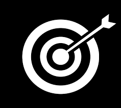
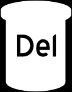
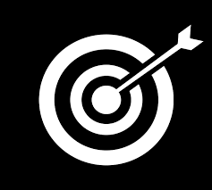
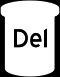
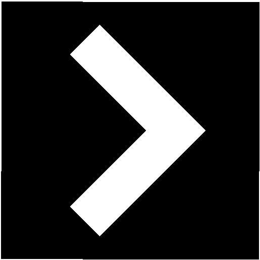
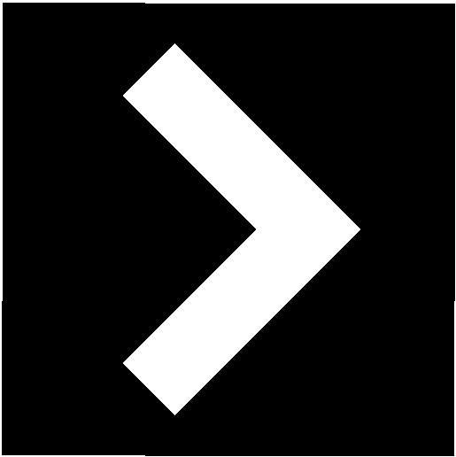
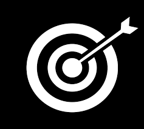
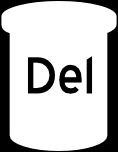
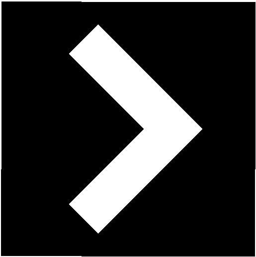

 

Настройки
Изменить цвет панели
Изменить язык



Изменить цвет панели
Изменить язык
Эта техника основывается на принципах некоторых общеизвестных методик: «Крутилки» Живорада Славинского (Метод мгновенной нейтрализации травм и шоков из прошлого), «Уменьшения» НЛП (потеря интереса к предмету, который отдаляется и уменьшается), Сравнения важностей, «50 лет спустя», Затемнения и засветления воспоминаний и Визуализации. Она универсальна и эффективна для устранения любых психологических проблем.
- Кнопка "Меню" с настройками и другими опциями - Кнопка для перемещения назадИзбыточная важность - это одна из ключевых причин любой психологической проблемы. По сути она включает в себя много ментального негатива: страхи, сомнения,неверие в свои силы, низкую самооценку, ограничивающие убеждения и установки… Важность – это искусственно созданный механизм, который не обладает независимым существованием, а создается и разрушается конкретным человеком в конкретных обстоятельствах. Бывает также общая важность для различных групп людей (согласно общим интересам и целям). Создание и повышение важности – это главный элемент игр разума, который создает интерес и обеспечивает возможность играть в игру. Снижение важности ведёт к уменьшению интереса и возможности покинуть игру. Если что-то теряет для нас важность, то оно автоматически перестаёт нами управлять. Поэтому её устранение – это мощный и скоростной инструмент для самопознания и очищения ума от мусора.